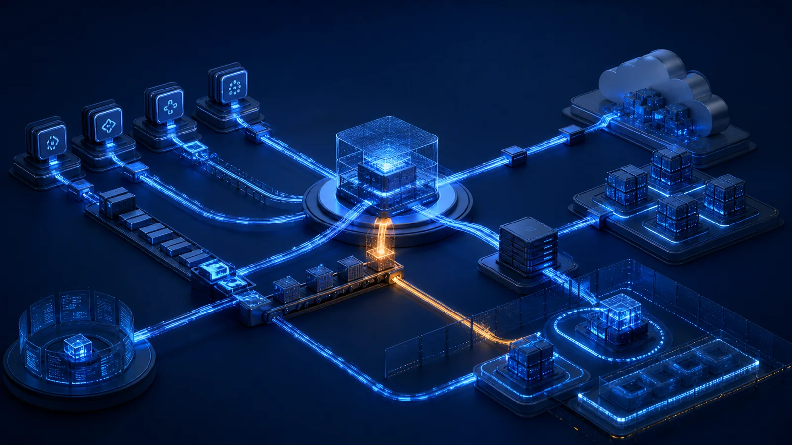

The Tools We Trust To Secure The Supply Chain Can Become The Supply Chain Risk
The platforms used to scan, build, sign and deploy software often hold access to repositories, credentials and production paths. Their privileges make them part of the supply-chain threat model.

Software supply chain security has become a major cybersecurity priority.
Organisations now scan dependencies.
Validate packages.
Monitor repositories.
Inspect containers.
Review open-source components.
Automate checks inside CI/CD pipelines.
The objective is simple.
Find weaknesses before attackers do.
That makes sense.
But there is an uncomfortable problem hiding inside this model.
The tools we trust to secure the software supply chain often have deep access to the very environments they are supposed to protect.
And that means they can become part of the supply chain risk themselves.
Security Tools Are Highly Trusted By Design
A modern security scanner may need access to:
- source-code repositories
- container registries
- cloud environments
- CI/CD pipelines
- build systems
- package managers
- Kubernetes clusters
- secrets stores
This level of access is necessary for the tool to do its job.
But it also creates concentration of trust.
If the tool is compromised, the attacker may inherit the same visibility and privileges that the organisation deliberately gave to the security platform.
The stronger the integration, the larger the potential blast radius.
That is the paradox.
A security tool can reduce one form of risk while creating another.
The Supply Chain Is More Than The Software You Ship
When people talk about software supply chain risk, the focus often goes to dependencies.
Libraries.
Packages.
Open-source modules.
Third-party code.
But the supply chain is broader than that.
It also includes everything used to build, test, scan, sign and release software.
Build servers.
Repositories.
CI/CD platforms.
Security scanners.
Package registries.
Artifact repositories.
Developer plugins.
AI coding assistants.
These components are not simply supporting tools anymore.
They are part of the production path.
And anything inside the production path becomes part of the trust model.
Privilege Is The Real Issue
The biggest concern is not whether the tool is labelled as a security product.
The real concern is privilege.
What can the tool see?
What can it modify?
Which credentials does it hold?
Which environments can it reach?
Can it access production?
Can it read secrets?
Can it trigger deployments?
Can it modify policies?
These are the same questions security architects ask about users and applications.
They should also be asked about security platforms.
Because a vulnerability scanner with broad cloud access is effectively a privileged identity.
A CI/CD platform with deployment permissions is effectively an administrative control plane.
A code-analysis service with repository access may have visibility into intellectual property and embedded credentials.
The product category does not reduce the risk.
The permissions define the risk.
Centralisation Creates Efficiency And Concentration
Organisations increasingly centralise security.
One platform scans every repository.
One identity provider authenticates everyone.
One cloud-management platform controls multiple environments.
One CI/CD platform deploys hundreds of applications.
One security console monitors the enterprise.
Centralisation improves consistency.
It simplifies governance.
It reduces operational overhead.
But it also creates concentrated trust.
If the central platform fails, the impact may spread far beyond one system.
This is why highly trusted platforms deserve stronger protection than ordinary applications.
The question should not be:
"Is this a security tool?"
The question should be:
"What happens to the organisation if this security tool is compromised?"
Security Architecture Must Assume The Scanner Can Fail Too
Security teams sometimes evaluate tools based on what they protect.
Good architecture also evaluates what happens when the tool itself fails.
What if the scanner is compromised?
What if its update mechanism is poisoned?
What if a plugin becomes malicious?
What if credentials stored inside the platform are exposed?
What if its integration token has more privileges than necessary?
The answer should not be:
"We trust the vendor."
Vendor trust is important.
But trust should never replace architecture.
Least privilege still matters.
Network isolation still matters.
Credential rotation still matters.
Independent monitoring still matters.
Segregation of duties still matters.
Security controls do not become exempt from security principles simply because they are security controls.
CI/CD Has Become Security Infrastructure
This is especially important for CI/CD environments.
A compromised production server may affect one application.
A compromised CI/CD platform may affect every application deployed through it.
That changes the scale of the risk.
Build pipelines can contain:
- cloud credentials
- signing keys
- deployment tokens
- API secrets
- package credentials
- infrastructure configuration
If an attacker gains control of the pipeline, they may not need to attack production directly.
They can modify what production trusts.
That is a much more powerful position.
The pipeline therefore deserves the same level of protection as other critical infrastructure.
Perhaps more.
Visibility Must Include The Tools That Provide Visibility
There is another irony.
Security teams rely on monitoring platforms to tell them when something is wrong.
But who monitors the monitoring platform?
Who validates the integrity of the scanner?
Who watches the deployment system?
Who detects misuse of the tool that is supposed to detect misuse?
This is where independent controls become important.
No critical security capability should become completely self-validating.
Logs should be protected independently.
Privileged access should be reviewed independently.
Critical actions should generate external alerts.
Administrative activity should be monitored outside the platform where practical.
The goal is not distrust for the sake of distrust.
It is avoiding a single point of invisible failure.
Final Thoughts
Software supply chain security is often described as a problem of untrusted code.
That is only part of the story.
The supply chain also contains highly trusted tools.
Scanners.
Pipelines.
Registries.
Repositories.
Automation platforms.
Security products.
These systems often sit at the centre of modern technology delivery.
That makes them valuable.
It also makes them attractive targets.
The lesson is not to trust security tools less.
It is to understand exactly how much trust we place in them.
Because the tool that protects every application may also have access to every application.
The platform that scans every secret may also be able to see every secret.
And the system that secures the supply chain can, if compromised, become the shortest path through it.
Question assumptions. Share knowledge. Build trust.
Share this article
If this perspective was useful, share it with your network.